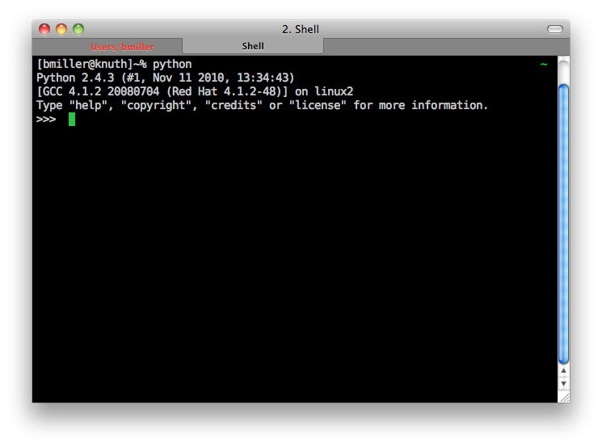

Although having Python available for you to use right in the browser is convenient, there are some limitations, and Python is a real programming language used for real applications by some very large and impressive corporations. In this Advanced Topic we’ll show you how to use the Python shell along with a simple text editor. In a later advanced topic we will introduce you to something called an Integrated Development Environment or IDE that will make life even better for you when working on a larger Python project.
One of the most important ways you can learn computer science is by simply experimenting or trying things. Unlike chemistry where you can explode things and do real damage, in computer science you really can’t go wrong by just experimenting a bit. In the worst case you might have to reboot your computer, but its pretty hard to do any long lasting damage.
For those of you used to fancy graphical user interfaces the Python shell make look a bit primitive, but don’t be fooled by the lack of fancy interface, you can do a lot of powerful stuff in the shell. On a Mac or with Linux Python is already installed for you. There is a short video link at the end of this topic that explains how to download and install Python on Windows. Here is an example of what the shell looks like once you have it started up.
To run the Python shell you will first need to start up the Terminal application, on the Mac you can find this under Utilities in the Applications folder, on most versions of Linux you can find it under the accessories menu. Once you have a terminal started, you simply type python and press the return key. To shart the shell under windows simply go to the start menu and choose Python (command line) from the menu.
Now that you have the shell started you may wonder what you can do with it? In the shell you can do anything you would do in a Python program. Any of the examples you have seen in this chapter can be typed in directly to the shell. Any Python expression can be entered into the shell and you will see the result printed out for you right underneath. Here are some examples using the functions and expressions introduced in this chapter.

Its a good idea to get in the habit of using the shell. Very often if you have a question about how something works you can answer the question for yourself by simply trying it in the shell. If you need a really extensable calculator you can simply start up your Python shell and use it to calculate just about anything. Soon you’ll find yourself writing little Python snippets for all kinds of things.
Of course the problem with the Python shell is that you can’t save anything, so you always have to retype whatever you want to do over again. Its also difficult to do anything more than a few lines long because if you make a typo you end up retying everything. Fortunately there is a solution for that as well. Python alows you to write a program, and save it as a text file with the extension .py and then you can run that program right from the command line.
Here is a simple example of a Python program.
print('Hello World')
print('2 + 3 = ', 2+3)
Lets assume that you have typed in the lines above in Notepad or TextEdit or some similar editor, if you already know emacs or vi you are a awesome! Now save the file as testprog1.py and then head back to the terminal. Now at the command line of the terminal type python testprog1.py and you will see the following output
bmiller@chronos> python testprog1.py
Hello World
2 + 3 = 5
Anything we do in the following chapters that appears in the editing window in the web page can be done exactly the same in the terminal just like the small example above. This example illustrates one very important difference between entering expressions in the Python shell, and writing a Python program. The Python shell uses what we call a read eval print loop. That is, Python reads an expression from the command line, then evaluates that expression, and finally prints the result. In a python program that you run using the Python interpreter, you have to be explicit about what it is you want to print. That is why in the Python program we use the print function on both lines.
If you are using windows you will need to install Python for yourself. Here is a video that explains how to do it.
We are assuming that you use Python 3.x, as of this writing the latest version is Python 3.2.1. This link will tell you how to update or install Python on Linux, Mac, or Windows. Install Python